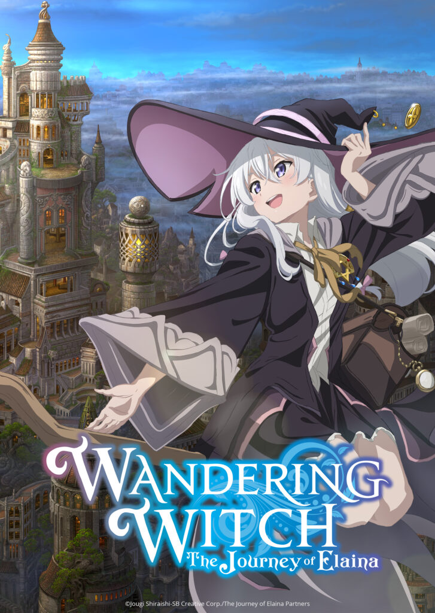
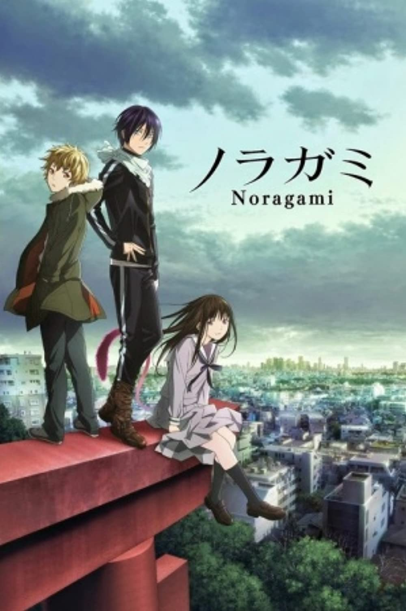

choose an anime or Animation that you think its better to watch first
Great Teacher Onizuka
اونیزوکا یک معلم خوب است که تصمیم گرفته است که خود را عوض کند و هدفی شرافتمندانه یعنی تبدیل شدن به بهترین معلم دنیا را انتخب کند البته هدف اصلی او ملاقات با دختران جذاب بودElfen Lied
داستان این انیمه درمورد موجودات فراانسانی به نام دیکلونیوس است که لقب انسان های دوشاخ را دارند و نوعی انسان هستند هنوز مشخص نیست از کجا آمدند و آن ها قدرت ماورا طبیعی مثل نامرئی شدن دارندBakemonogatari
آراراگی یک دانش آموز سال سومیه که توی تابستون از دست حمله خون آشام ها جون سالم به در می بره همون موضوع باعث ایحاد تغییرات تو اون میشه مثلا میتونه در تاریکی مثل روز ببینه یا به سرعت زخم هاش التیام پیدا میکنه روزی از روز ها که وقتی داره از پله های مدرسه بالا میبره دخری از همکلاس هاش رو میبینه که در حالVermeil in Gold
آآکادمی جادوی سلطنتی ارتیگیا. آلتو که در آستانه رد شدن در کلاس جادوی احضار و در نتیجه تکرار این سال تحصیلی هست به یه کتاب وردهای جادویی برخورد می کنه و یه دایره جادویی می کشه و در نتیجه شیطان ورمیل رو که مهر و موم شده بوده رو آزاد کرده و روح خدمتکار آلتو میشه ورمیل از زمان های قدیم به شیطان معروف بوده و دارای قدرت بسیار زیادیست که می تونه خرابی بسیار ایجاد کنه. ورمیل اما چون به یه روح خدمتکار تبدیل شده، هر روز به انرژی جادویی نیاز داره و اونو از آلتو از طریق بوسه های شهوانیش به دست میاره

Wandering Witch: The Journey of Elaina
روزی روزگاری ساحره ای به نام الینا بود که به سفری در طول دنیا رفت در طول مسیر، همه جور آدم رو از کشوری پر از جادوگر میبینه که عاشق خودشن – ولی در هر دیدار الینا فقط بخش کوچکی از داستان میشه و دنیای خودش کمی بزرگتر میشه.

Noragami
داستان در مورد شخصی با نام ” یاتو ” است که یک خدای کوچک در میان ژاپنی هاست و خود را خدمتگذار مردم میخواند و میخواهد روزی میلیون ها انسان به فرقه ی او روی آورند با اینکه او حتی معبدی نیز برای خود ندارد. او روزگارش را با شرخری برای پنج ین میگذارند تا برای سلاح انسان مانندش و خودش لقمه ای نان فراهم کند. وقتی که روزگار یاتو با تیرگی در حال سپری شدن است دست سرنوشت اورا سمت دختری دبیرستانی به اسم ” هیوری ایکی ” میکشاند که یاتو را از تصادف نجات میدهد و خودش به جای او با ماشین برخورد میکند. هیوری زنده میماند ولی تصادف باعث شده که روحش ناپایدار باشد و از بدنش خارج شودRecord of Grancrest War
در قاره آتلاتان، شیاطینی از بعد دیگری به نام آشوب به آنها هجوم آوردند که اشراف با استفاده از کرست ها به مقابله با آنها پرداختند که به آنها قدرت های مافوق بشری داد با این حال، به جای پیوستن به نیروهای خود برای پایان دادن به هرج و مرج، اشراف در عوض با هم جنگیدندThe Greatest Demon Lord Is Reborn as a Typical Nobody
به عنوان قوی ترین موجود تاریخ، لرد شیطانی وارواتوس فکر میکنه که زندگی خیلی خسته کننده ست وقتی که خودش موضوع رو به دست میگیره و تصمیم میگیره که خودش رو دوباره متولد کنه، تصمیم میگیره که قدرت جادوییش رو در حد میانگین نگه داره ولی انتظارش رو نداشته که تمام مردم این دوره زمونه اینقدر ضعیف باشن، که باعث میشه که اون دوباره قوی به حساب بیاد! تحت اسم جدید آرد، دخترها عاشق اونن خانواده های اشرافی التماسش میکنن که پادشاه بعدی بشه و یک کارگر قدیمی قصد جونش رو داره؟! ولی آرد ذهن بسته ای داره و تا به هدفش نرسه دست بر نمیداره!Log Horizon
داستان با ۳۰ هزار نفر بازیکن ژاپنی که در دنیای بازی آنلاین فانتزی “حکایت قدیمی” گرفتار شدهاند، آغاز میشود چیزی که در گذشته دنیای سبک “شمشیر و جادوگری” بود، حال دنیای واقعی است “شیرو” کاراکتر اصلی، در کنار دوست قدیمیاش “نائوتسوگو” و آدمکش زیبا “آکاتسوکی” ، سعی دارند خود را نجات دهند. Toilet-bound Hanako-kun
«هاناکو-سان، هاناکو-سان… تو اونجایی؟» در آکادمی کامومه، شایعات زیادی درمورد هفت سرّ مدرسه وجود دارد که یکی از آنها هاناکو- سان است گفته میشود که او سومین اتاق دستشویی در طبقهی سوم ساختمان قدیمی مدرسه را اشغال میکند.نِنه یاشیرو، یک دختر دبیرستانی عاشق چیزهای اسرارآمیز و رمزآلود که رویای چیزهای عاشقانه را دارد، به این دستشویی جن زده قدم میگذارد … اما هاناکو-سانـی که او ملاقات میکند اصلاً آن هاناکو-سانـی نیست که او تصورش را میکرد! هاناکو-سانـه آکادمی کامومه… یک پسر است!Management of a Novice Alchemist
آسمونا رو هدف بگیر! من قراره که شیمیدان شماره یک کشور بشم! وقتی که دختر جوانی به نام ساراسا از آکادمی شیمی سلطنتی فارغ التحصیل میشه، معملمش بهش یه خونه هدیه میده تا توش یه فروشگاه باز کنه ساراسا که هدفش تبدیل شدن به یه شیمیدان کلاس استادی هست، تمام مواد رو خودش جمع آوری می کنه روشون آزمایش می کنه و یه کسب و کار رو انجام می ده. اون در کارگاه خودش یه زندگی شیمیدانی آرام و راحتی داره!